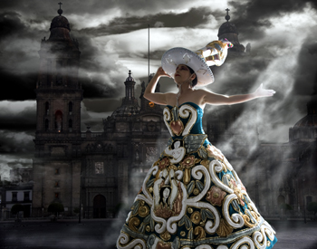

Her shows are a cocktail of bolero, rumba, ranchero, jazz, postmodern kitsch, surreal costumes and iconography. On stage, she sings, acts, dances and tells political jokes. Already a legend in her own country and abroad, eccentric Mexican diva Astrid Hadad is now coming to Ireland for the first time.
For next weekend's Festival of World Cultures, where she will be introduced by Jack L, Hadad has prepared a collection of parts taken from several previous shows. "I chose one or more songs from some of them. I want the public to see a collection of my works," she says. With an almost 30-year career and performances worldwide, choosing was tough. "One single show is not enough for me to make the people understand my work."
On stage Hadad becomes an icon, embodying the rich array of Mexican symbols through a range of extravagant costumes. She uses costumes as appealing visual tricks to convey deeper meanings. "There will be almost a costume for each song. The costumes look really Mexican but I will deal with universal issues like the condition of women, corruption, the economic crisis or war. My shows are surrealistic because Mexico is surreal. Carlos Mosivais, a Mexican writer, once said: 'If Kafka was born in Mexico he would have been a surrealist writer.'" Little wonder that the New York Times said of her: "She makes Salvador Dali look like Norman Rockwell."
Hadad began her personal cultural revolution after dropping out of her university course in political science in Mexico City in the '80s. "When I started to sing professionally I realised that singing wasn't enough. I felt the urgency to say a lot of things, so I began to study theatre." She studied cabaret and was inspired by the works of Brecht and Weill. Then she began to mix her sources of inspiration.
Hadad drew on the rich musical and cultural tradition of Mexico and designed her own costumes. "It was my way to make a Mexican cabaret, to communicate with the audience not only by singing but also through images since Mexican culture is made of images. I was trying to provoke a reaction in the public." But when she started out 27 years ago, few people understood her shows. Her profuse femininity, her costumes – sometimes depicting the opposite of what she's singing about – playing with tradition, becoming the first to introduce a saxophone into popular Mexican songs… "People weren't used to this kind of unconventional theatre," she says.
She doesn't use scenography, claiming that she herself is the scenography: "My body is a museum of popular culture." She can perform as the Aztec nun or the postmodern Catholic, the naïve woman or the femme fatale: "Sometimes in life we need to be all women as we have all of them inside. I talk about how difficult it is to be a woman, whether it is about getting a job or going into politics. These kinds of problems don't need a passport, they're all around the world."

Her ideas come from nature, Catholic, Atzec and Mayan iconography, paintings or poetry. "Often my costumes come from dreams," she says. References to Mexican artist Frida Khalo might be expected to come naturally but Hadad wants to make a point about this: "I didn't know her very well. When I began my career she was not well known as she is now. The fact is that both of us used symbols that belong to Mexican collective memory like flowers or Aztec symbols." She is, however, anything but offended by the comparison: "I decided to introduce in the show one of her favourite songs, as an homage to her."
Her website says she defines her music as "conceptual art in Astrid Hadad's style" and "Heavy Nopal". Amused when asked what this means, she explains that it's a joke. "When I say that it is conceptual art I refer to the fact that many people now pretend to be artists, but there is a lot of rubbish in the market, if you can pardon me the expression. So when they come up with an idea they say 'This is conceptual art.' It's the easiest way if you don't have any talent. 'Nopal' is the name of a famous Mexican cactus. And 'Heavy'... well, you'll see."
Astrid Hadad plays the Pavilion Theatre, Dun Laoghaire on Friday festivalofworldcultures.com